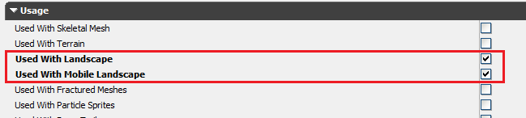
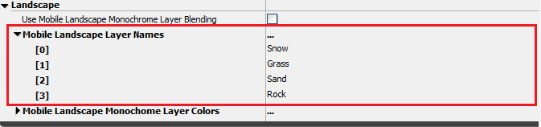
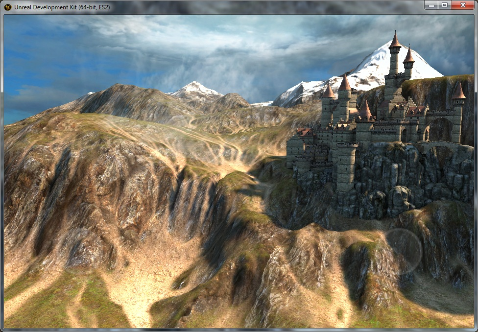
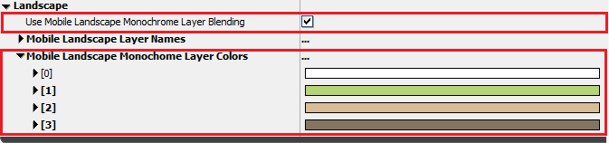

UDN
Search public documentation:
MobileLandscapeJP
English Translation
中国翻译
한국어
Interested in the Unreal Engine?
Visit the Unreal Technology site.
Looking for jobs and company info?
Check out the Epic games site.
Questions about support via UDN?
Contact the UDN Staff
中国翻译
한국어
Interested in the Unreal Engine?
Visit the Unreal Technology site.
Looking for jobs and company info?
Check out the Epic games site.
Questions about support via UDN?
Contact the UDN Staff
モバイルランドスケープ
概要
モバイルデバイスでランドスケープを表示する際のマテリアル


通常のレイヤーブレンド
同様のマテリアルをモバイルデバイスで設定する場合、最初にマテリアルの使用フラグを適切に設定しなくてはいけません。 Use With Landscape と Use With Mobile Landscape が両方チェックされていることを確認してください。
次に、各レイヤーに使用するテクスチャを指定します。レイヤーに使用するテクスチャは、Landscape Editモードのウィンドウに表示される順番で指定します。その他の方法として、 Mobile Landscape Layer Names プロパティで使用するレイヤーをリストアップすることも出来ます。下記の例では、Snow、Grass、Sandの順番となっています。
最初のレイヤーは、 Mobile Base Texture プロパティで指定します。以下に続くレイヤーは、[Texture Blending]セクションの、 Mobile Detail Texture 、 Mobile Detail Texture 2 、 Mobile Detail Texture 3 スロットで指定します。 そして最後に、[Texture Transform]セクションから、テクスチャのUVスケールを要望に合わせて指定できます。 マテリアルの設定後、[Emulate Mobile Features]ボタン
マテリアルの設定後、[Emulate Mobile Features]ボタン
モノクロレイヤーブレンド
R、G、BそしてAチャンネルにそれぞれ格納されたテクスチャのモノクロバージョンの、4つのレイヤーテクスチャを一つのテクスチャへまとめることも可能です。ブレンドする前に、各レイヤーのカラー化に使用する4つのRGB値を指定します。例えば、Snowには白を指定、Grassには緑、そしてロックのレイヤーには茶色を指定します。 このブレンドを行うことによって、各レイヤーにたくさんのカラーバリエーションを持たすことは出来なくなりますが、ウェイトテクスチャとシングルレイヤーテクスチャのみを使用することによって、ブレンドを簡素化します。これによって、特にローエンドデバイスにおけるパフォーマンスが著しく向上します。 この機能を有効化するには、 Use Mobile Landscape Monochrome Layer Blending ボックスをチェックします。そして、 Mobile Landscape Monochrome Layer Colors プロパティで各レイヤーのRGB値を指定します。
最後に、まとめたレイヤーテクスチャをインポートして、 Mobile Base Texture プロパティで参照します。 Mobile Detail Texture プロパティはブランクでなくてはいけません。パフォーマンスとメモリ
コンポーネントサイズ
Drawコールとトライアングルの数を制限することは、モバイルデバイスにおいて重要です。Drawコールの数は、ランドスケープコンポーネントの数によって決定されます。またコンポーネントサイズとサブセクションの数はトライアングル数を決定し、LODトランザクションが発生する速さを決定します。開発途中で、126x126クワッド（63x63クワッドの2x2サブセクション）で1009x1009サイズのランドスケープを使用すると、トライアングル数とLODトランザクション間で良いバランスが取れることが分かりました。 コンポーネントサイズに関する更なる情報は、新たなランドスケープの作成ページを参照してください。Mobile LOD バイアス
モバイルのランドスケープで、レンダリングされるトラアングル数を削減する設定方法が二つあります。まず、Landscapeアクタの MobileLodBias プロパティです。この数値の各インクリメントは、それぞれのコンポーネントのサイズを全てのモバイルプラットフォームで1ミップレベル相当削減します。例えば、2x2サブセクションの63x63クワッドランドスケープにMobileLodBias=1を設定した場合、ハイトマップのトップミップデータがクック時に破棄され、解像度が2x2、31x31クワッドランドスケープへ削減されます。[Emulate Mobile Features]ボタンを有効にすると、縮小された解像度でランドスケープが表示されます。 次の設定は、 BaseSystemSettings.ini の MobileLandscapeLodBias です。この値は、MobileLodBiasプロパティと同様の機能をしますが、特定のデバイスに基づいてランタイム時に追加のバイアスが実行されます。例えば、第4世代のiPod Touchデバイスではデフォルトのバイアスが1となっていて、それは半分の解像度を使用したハイトマップ、iPhone 4Sでレンダリングされるトライアングル数の四分の一であることを意味します。この設定はゲームの必要性に応じて調整が可能です。- MobileLandscapeLodBiasは、レンダリングデータが初期化されるまでフルの解像度データを処分しないため、ピーク時のメモリ使用量は削減されないことに注目してください。メモリ使用量はレベルがロードされると削減されます。
メモリ使用量
PCプラットフォームでは、ハイト及び法線データの効率的な格納や、LODトランザクションを簡単に計算するために頂点テクスチャを使用します。モバイルプラットフォームでは、固定頂点とインデックスバッファを使用します。これにより、モバイルデバイスでのメモリ使用量が増加しました。| PC | モバイル | |
|---|---|---|
| 位置データ | LODの頂点につき2バイト | LODの頂点につき8バイト |
| 法線データ | LODの頂点につき2バイト | LODの頂点に追記4バイト |
| コリジョンデータ | 頂点につき4バイト | 頂点につき4バイト |
| レイヤーデータLayer data （4 レイヤー） | 頂点につき4バイト | 頂点につき4バイト |
スタッツ
STAT LANDSCAPE コンソールコマンドで、ランドスケープビューのトライアングル及びdrawコール数が表示出来ます。制限
- ランドスケープの穴（洞穴や縦穴）はまだサポートされていません。
- LODは厳密に距離に基づいていています。固定LODを含むコンポーネントで、頂点シェーダーでは2つのLODレベルのみがサポートされていることから、LODファクタの変更はサポートされていません。
- [Emulate Mobile Features]
 ボタンではランドスケープの編集は出来ません。ランドスケープの編集モードに入ると、[Emulate Mobile Features]ボタンはクリックされた時にトグルされます。
ボタンではランドスケープの編集は出来ません。ランドスケープの編集モードに入ると、[Emulate Mobile Features]ボタンはクリックされた時にトグルされます。
- 2x2サブセクションの127x127クワッドなど、128x128頂点よりも大きなコンポーネントサイズはサポートされていません。大きなコンポーネントサイズは頂点バッファで65536頂点数以上を必要としますが、16ビットインデックス値がオーバーフローしてしまいます。より大きなサイズを使用する試みはレンダリング破損を引き起こします。この状況でMobileLodBias=1に設定することによって、コンポーネントの頂点数が減り問題解決となります。